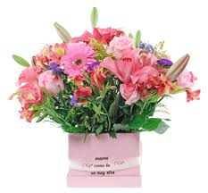
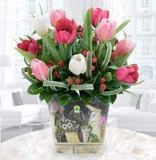
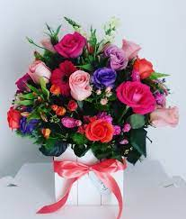
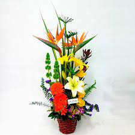
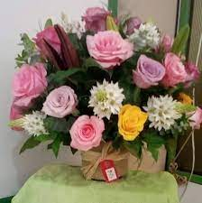
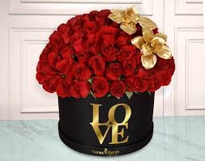
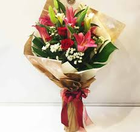
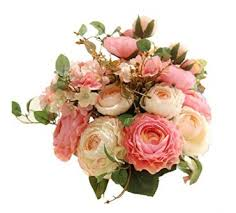
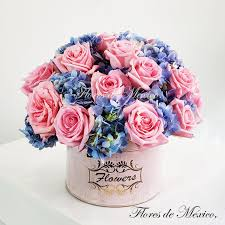
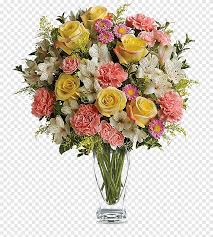

Son uno de los regalos más hermosos y, también, más especiales. A pesar de ello, por qué regalar flores se restringe en líneas generales a unos pocos momentos del calendario. Una costumbre que, curiosamente, choca frontalmente con la tradición. Y es que, hasta hace algunas décadas, por qué regalar flores no tenía momento específico.
Las flores hablan por sí mismas. Y, en muchas ocasiones, son nuestro mejor aliado para decir muchas cosas sin palabras. Porque está claro que, quien regala flores, lo hace siempre llevado por emociones positivas y hermosas. Ya sea por amor, entendido de muchas maneras; como muestra de apoyo o, simplemente, buscando hacer feliz a otra persona. Quien recibe flores entiende a la perfección que, tras un ramo o una planta, hay sentimientos hermosos. ¡Y qué sería este mundo sin compartirlos con la gente que nos importa!
Learn moreLa naturaleza nos hace sentir paz y alegría. El contacto con ella nos carga las pilas y nos renueva. Y por ese mismo motivo, este factor es fundamental a la hora de preguntarse por qué regalar flores. Recibirlas puede cambiar el estado emocional de una persona. Son sinónimo de sorpresa, alegría y felicidad. Porque ¿qué es si no ser felices más que esos pequeños momentos?
Read more --->La naturaleza nos hace sentir paz y alegría. El contacto con ella nos carga las pilas y nos renueva. Y por ese mismo motivo, este factor es fundamental a la hora de preguntarse por qué regalar flores. Recibirlas puede cambiar el estado emocional de una persona. Son sinónimo de sorpresa, alegría y felicidad. Porque ¿qué es si no ser felices más que esos pequeños momentos?
Read more ---> Regalar supone más de un quebradero de cabeza porque, más allá de la intención en sí del presente, se busca un único objetivo: que guste. Y, tratándose del mundo de las flores, es prácticamente imposible no encontrar la adecuada para cada persona.
Por la increíble versatilidad del mundo vegetal y su variedad, no tengas miedo.
Read more ---> Cualquier día es perfecto para sorprender. Para hacer de un lunes un día más bonito, o de un día de lluvia uno más alegre. Porque los regalos más hermosos son, precisamente, los que no se esperan.
Read more ---> hacerlo sin motivo aparente convierte un día cualquiera en uno inolvidable. Por ejemplo: si nos planteamos regalar flores a alguien que estrena su casa, siempre recordará que ese fue nuestro presente en nuestra primera visita.
Read more ---> Ya sea por amor, entendido de muchas maneras; como muestra de apoyo o, simplemente, buscando hacer feliz a otra persona. Quien recibe flores entiende a la perfección que, tras un ramo o una planta, hay sentimientos hermosos.
Read more ---> Gracias a la floristería online, regalar y hacer disfrutar está a golpe de un solo click.
DomicilioNuestra promocion ahoras un 30%.
Las mejores flores de Bogota.
Elige un arreglo floral para cualquier ocasion.
Llegaremos a la direccion de domicilio indicada.
Mira mas diseños.
 Ingrese aquí